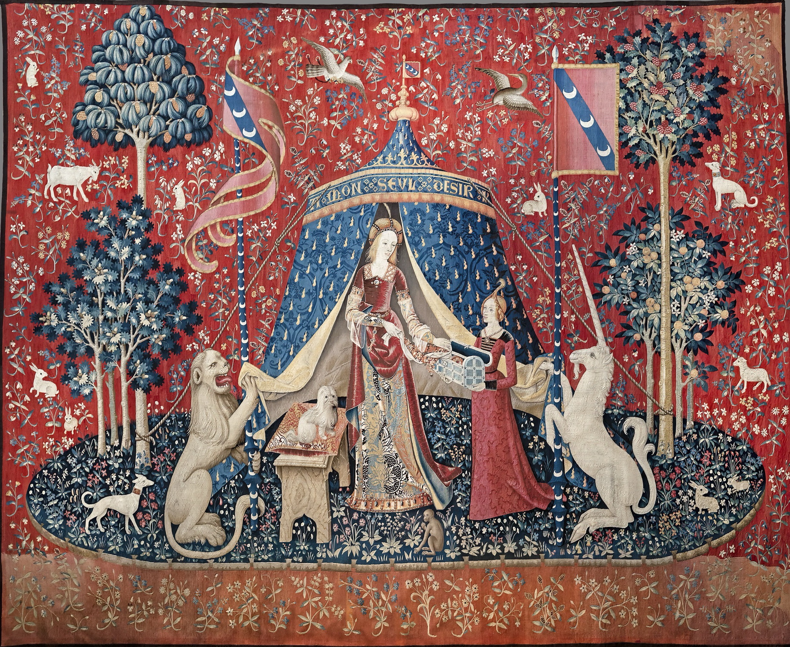

Le Moyen Âge · Vers 1500
La Dame à la licorne
Cinq tapisseries pour les cinq sens. Une sixième, « À mon seul désir », garde encore son secret.
Ce que j'aime : m'y perdre. Chaque recoin cache une fleur, un lapin, un oiseau.
Atelier anonymeÀ mon seul désir, vers 1500
Tapisserie, laine et soie, 377 × 473 cm
Musée de Cluny, Paris
Tapisserie, laine et soie, 377 × 473 cm
Musée de Cluny, Paris